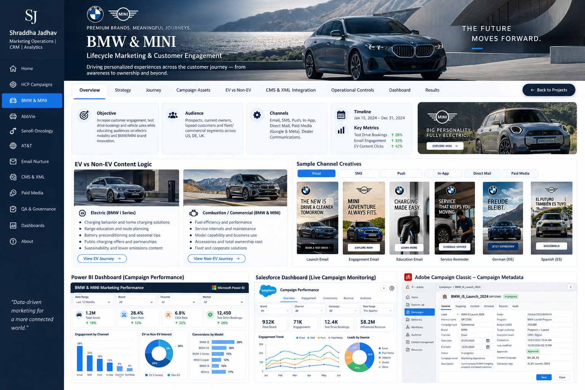
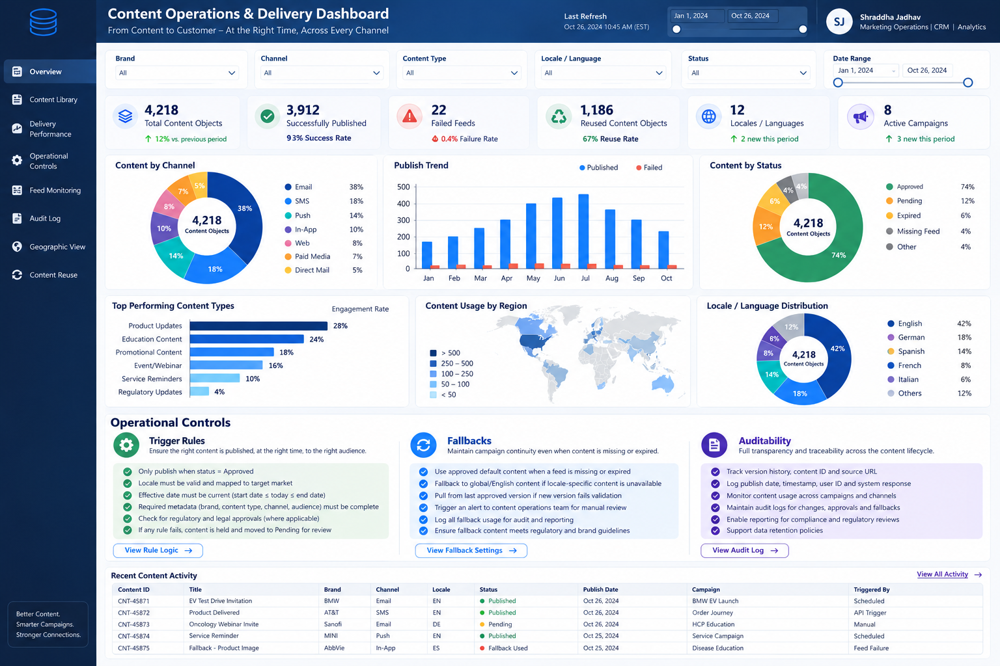

I connect data, technology and creative execution to build personalized customer experiences across email, SMS, push, in-app, paid media, CRM and analytics.
I’m a marketing operations and lifecycle professional with 6+ years of experience turning customer signals, content and technology into coordinated experiences across healthcare, automotive and enterprise programs.
My role sits at the intersection of strategy and execution: defining the audience, shaping the journey, orchestrating content and automation, protecting campaign quality, and translating performance into clear business decisions.

Multilingual CRM, EV and non-EV decisioning, CMS/XML/API flows, emissions data, personalized content and campaign measurement.
View Case Study →Email, AEM Assets, personalized content blocks, events, Google, Meta, LinkedIn and Power BI campaign measurement.
View Case Study →CRM journeys across email, direct mail, telemarketing, consent, specialty segmentation and field coordination.
View Case Study →Journey migration, data mapping, release QA, cutover governance and post-launch monitoring.
View Case Study →
Asset governance, API triggers, XML transformation, dynamic content and reusable campaign modules.
View Case Study →Power BI and Salesforce-style views for campaign performance, journey conversion and CRM monitoring.
View Case Study →Audience activation, creative variants, UTMs, conversion tracking, retargeting and cross-channel reporting.
View Case Study →Metadata, preflight controls, rendering, data validation, approvals, launch checklists and auditability.
View Case Study →A/B and multivariate testing, holdouts, audience splits, QA controls, guardrails and rollout decisions across lifecycle channels.
View Case Study →Welcome, reminder, ordered, shipped and delivered communications with behavioral branching and suppressions.
View Case Study →My resume provides the full detail on experience, business outcomes, tools, education and certifications.
Campaign configuration, targeting, workflows and execution.
Planning, stakeholder management and delivery fundamentals.
Practical AI workflows for productivity and problem solving.
AI fundamentals, responsible AI and Salesforce AI capabilities.
Outside of work, I’m happiest when I’m learning, creating or exploring. Cooking keeps me experimental, painting gives me a quiet creative reset, and decorating spaces brings out the part of me that notices details and enjoys making things feel welcoming. I love trekking and travel because new places keep me curious and open-minded, and I have a genuine soft spot for animals. These little interests keep me positive, grounded and excited to discover something new.
Trying new recipes keeps me curious and patient. I enjoy the process, the small experiments, and sharing something good at the end.
Painting helps me slow down, notice details and enjoy creating without needing every outcome to be perfect.
I enjoy creating calm, organized spaces that feel warm and motivating, especially a good study corner with thoughtful details.
New trails, mountain views and unfamiliar places bring out my adventurous side and keep me curious about the world.
Animals instantly brighten my day. I love their energy, loyalty and the way they make even an ordinary moment feel happier.
Open to Marketing Operations, Lifecycle Marketing, CRM, Campaign Strategy and Marketing Manager opportunities.